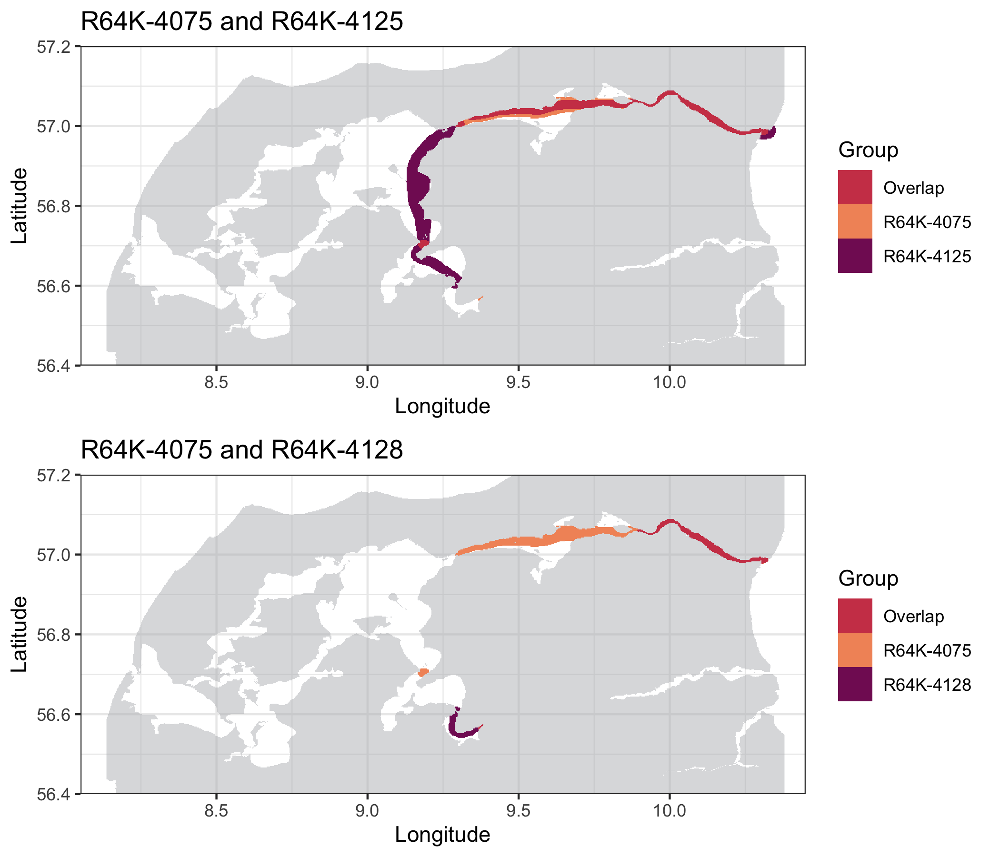
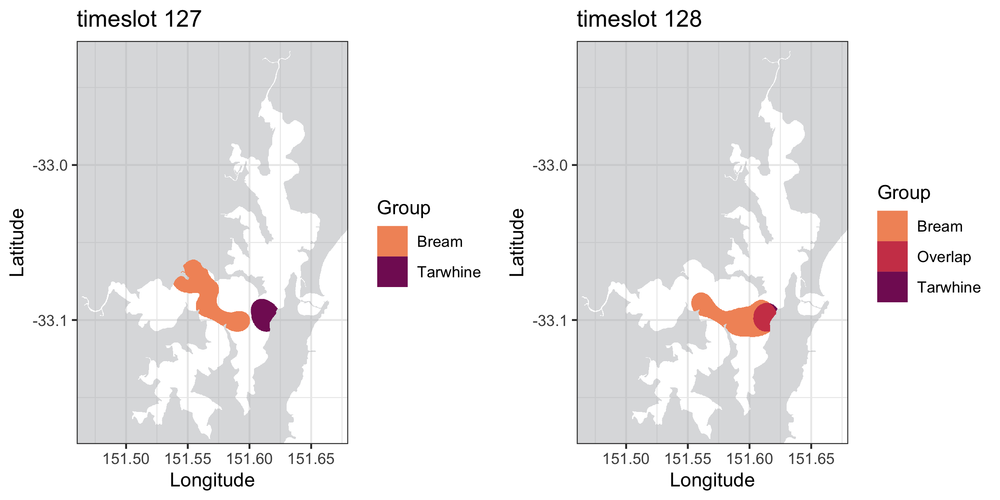

vignettes/a-4_Overlaps.Rmd
a-4_Overlaps.RmdIf your study comprises multiple biological groups
(e.g. different species, different sexes, etc.), you might find it
useful to calculate the overlap between them. To
calculate the overlaps, the areas of space use must be first calculated
at group level (using the getAreas()
function with type = 'group'). Overlaps are automatically
calculated at the same levels provided in the breaks
argument in getAreas() (50% and 95% by default). Areas of
overlap correspond to the area/percentage of the smallest area that
falls within the largest area, calculated for all monitored groups and
returned both in absolute (squared metres) and percentages.
When utilization distribution areas are calculated for group dBBMM, models are calculated at the track level for each monitored animal. This analysis does not provide standardized tracks, and start and end times vary among tracked individuals depending on when they were present within the study area. Consequently, this option will simply calculate the general overlapping areas among the groups of interest:
overlap.save <- getOverlaps(areas.group)
overlap.save$areas$`0.95`$absolute| R64K-4075 | R64K-4125 | R64K-4128 | R64K-4138 | |
|---|---|---|---|---|
| R64K-4075 | NA | 82080502 | 31831020 | 103273976 |
| R64K-4125 | 82080502 | NA | 33164114 | 186469924 |
| R64K-4128 | 31831020 | 33164114 | NA | 44753870 |
| R64K-4138 | 103273976 | 186469924 | 44753870 | NA |
overlap.save$areas$`0.95`$percentage| R64K-4075 | R64K-4125 | R64K-4128 | R64K-4138 | |
|---|---|---|---|---|
| R64K-4075 | NA | 0.7607161 | 0.7090909 | 0.9571357 |
| R64K-4125 | 0.7607161 | NA | 0.7387879 | 0.9081876 |
| R64K-4128 | 0.7090909 | 0.7387879 | NA | 0.9969697 |
| R64K-4138 | 0.9571357 | 0.9081876 | 0.9969697 | NA |
In the example we can notice that R64K-4075 and
R64K-4125 used 76.07% of the same areas, whereas
R64K-4075 and R64K-4128 only
overlapped in 70.91%. Now we can use plotOverlaps() to see
exactly where in the study area these overlaps took place:
plotOverlaps(overlaps = over.save, areas = areas.save, base.raster = water.shape,
groups = c("R64K-4075", "R64K-4125"), level = 0.95)
plotOverlaps(overlaps = over.save, areas = areas.save, base.raster = water.shape,
groups = c("R64K-4075", "R64K-4128"), level = 0.95)
Warning message:
Raster pixels are placed at uneven horizontal intervals and will be shifted. Consider using geom_tile() instead.
Please note that these plots can return a warning. This is issued by ggplot2 because, when there are multiple tracks/tags in the same group, the empty cells of the raster are cleared out to improve plotting efficiency. Please be aware that this warning is harmless for the map created.
The standardized tracks returned from timeslot dBBMM can be used to calculate overlaps between multiple groups both in space and time.
overlap.save <- geOverlaps(areas.group)
overlap.save$areas$`0.95`$absolutes$`128`| Bream | Tarwhine | |
|---|---|---|
| Bream | NA | 2454723 |
| Tarwhine | 2454723 | NA |
overlap.save$areas$`0.95`$percentage$`128`| Bream | Tarwhine | |
|---|---|---|
| Bream | NA | 0.9680747 |
| Tarwhine | 0.9680747 | NA |
plotOverlaps(overlaps = overlap.save, areas = areas.group, base.raster = water.shape,
groups = c("Bream", "Tarwhine"), timeslot = 127, level = 0.95, title = "timeslot 127")
plotOverlaps(overlaps = overlap.save, areas = areas.group, base.raster = water.shape,
groups = c("Bream", "Tarwhine"), timeslot = 128, level = 0.95, title = "timeslot 128") 
Note that if the two groups don’t overlap, the following message will be issued:
M: No overlap found between 'Bream' and 'Tarwhine'. Plotting only the separate areas.Maybe you are interested in better understanding the potential
factors influencing the overlapping areas between different
biological groups. If that’s your case, and you have ran a
timeslot dBBMM analysis, the function getOverlapData() is
what you are looking for. You’ll need to provide the outputs from
getOverlaps() (input) and dynBBMM() (dbbmm),
and select the two biological groups of interest (groups) together with
the desired level of the dBBMM contour to extract the overlaping data
for (level). Overlaps for each timeslot will then be returned at both
absolute and percentage values.
df.overlap <- getOverlapData(input = overlap.data, dbbmm = dbbmm.data,
groups = c("G1", "G2"), level = 0.5)
df.overlap| slot | start | stop | Absolute_G1_G2 | Percentage_G1_G2 |
|---|---|---|---|---|
| 1 | 2020-01-04 00:00:00 | 2020-01-04 11:59:59 | 79761.94 | 1.0000000 |
| 2 | 2020-01-04 12:00:00 | 2020-01-04 23:59:59 | 25182.57 | 0.9496124 |
You have reached the end of the manual! We wish you the best luck with your data :)
If you find any bug, please let us know through this link.